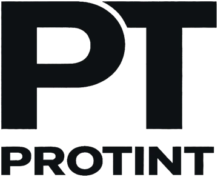
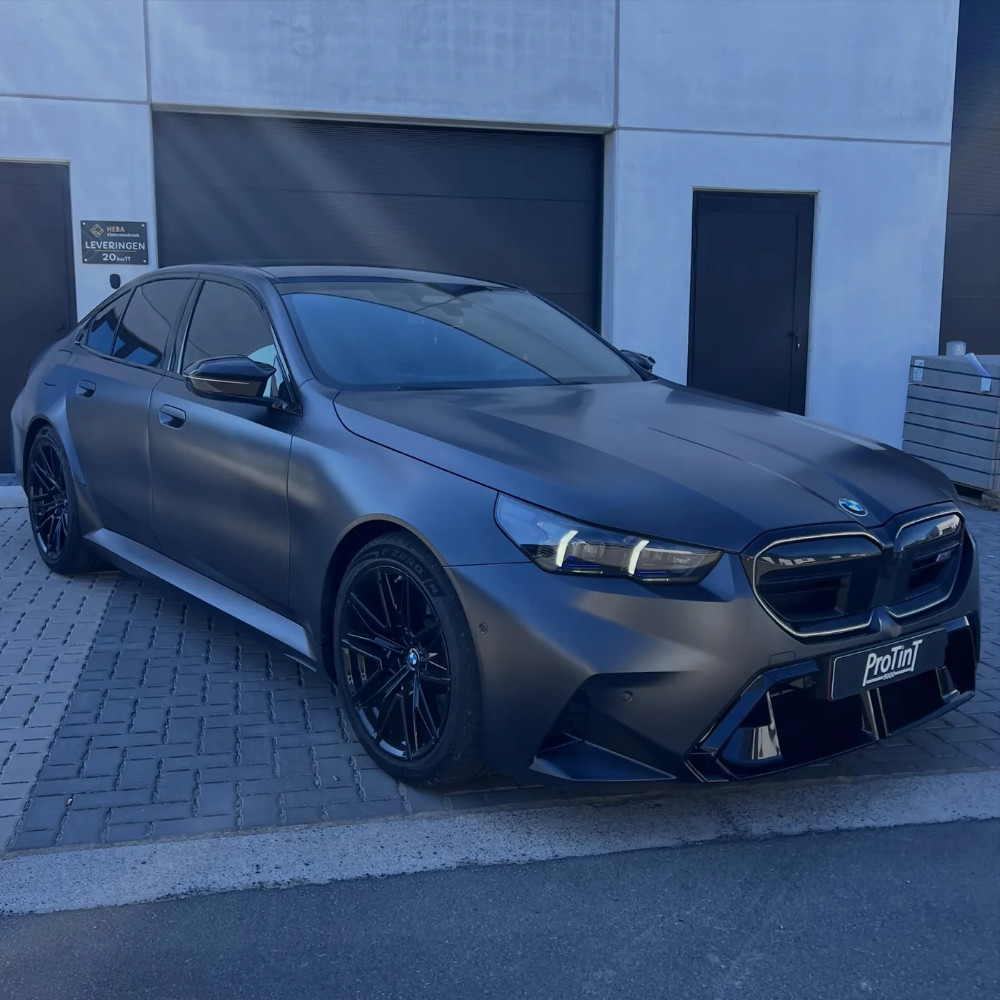
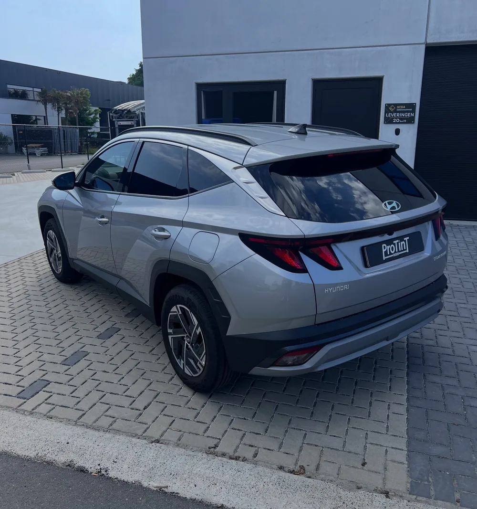
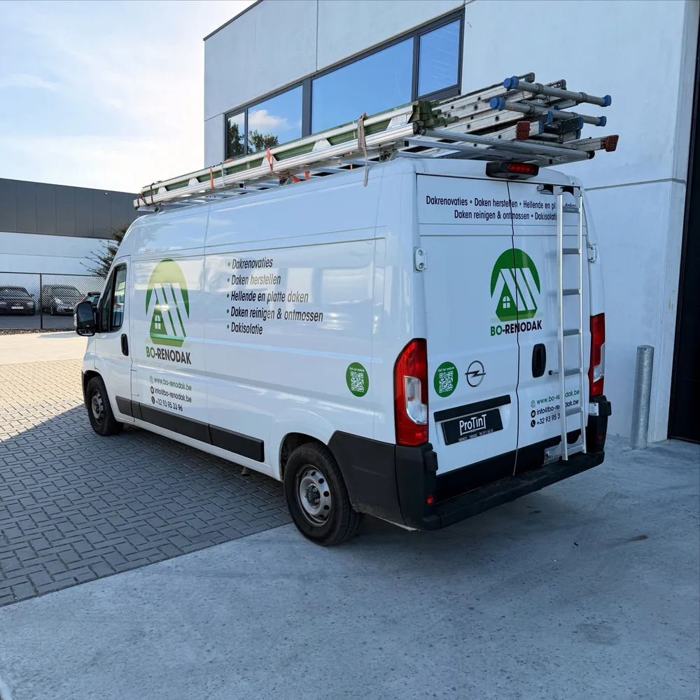
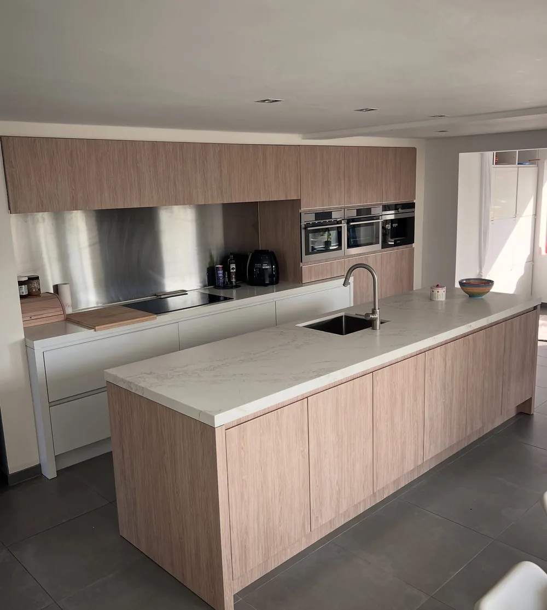
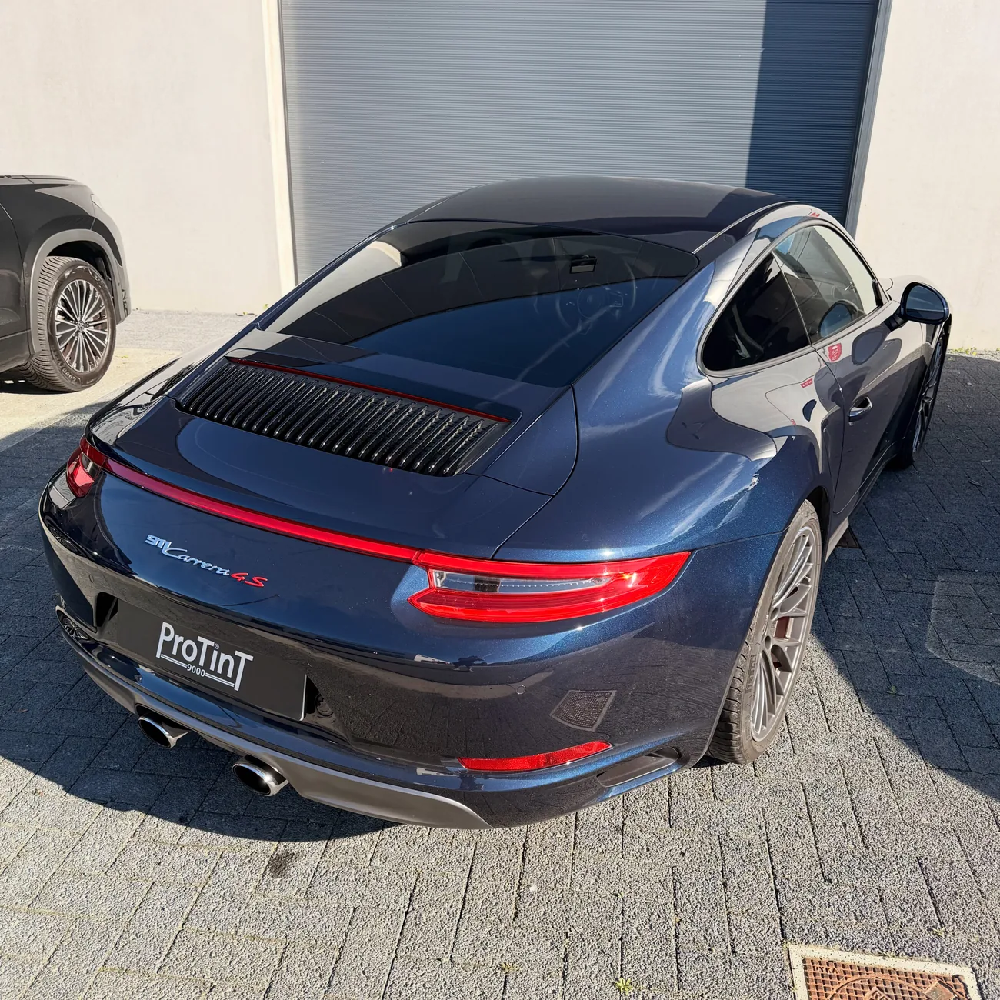
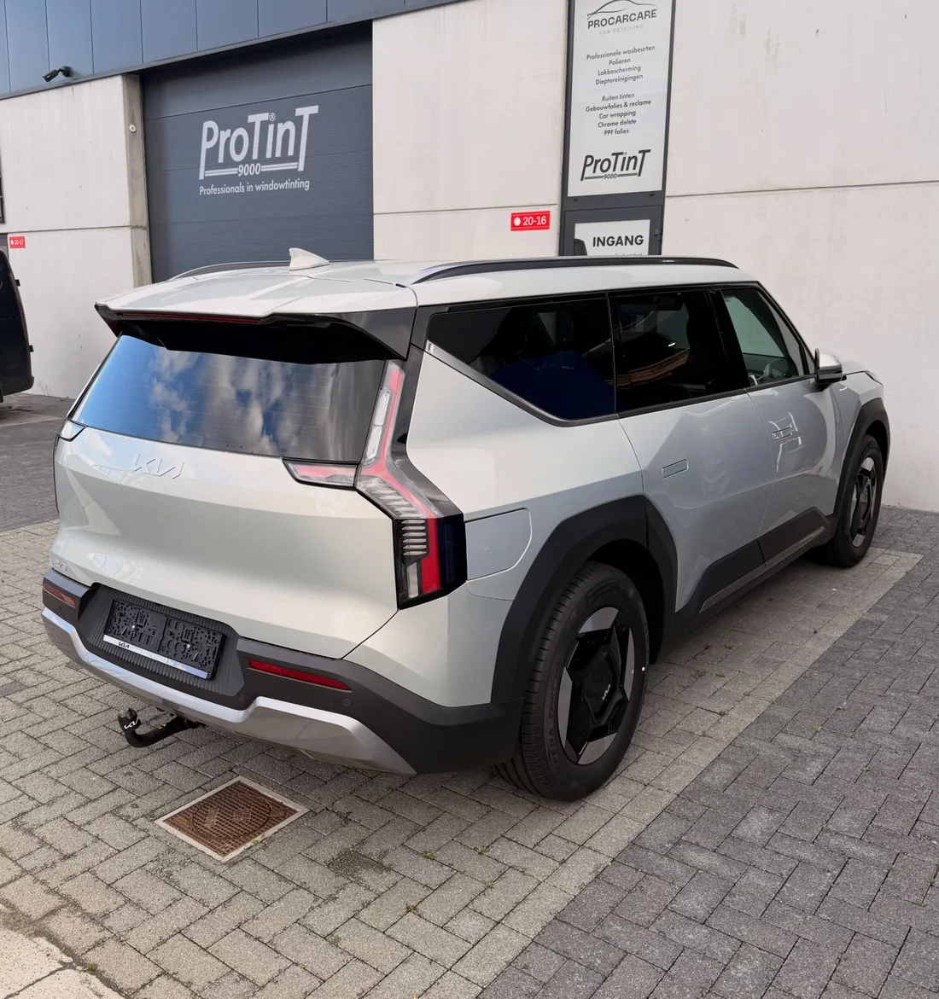
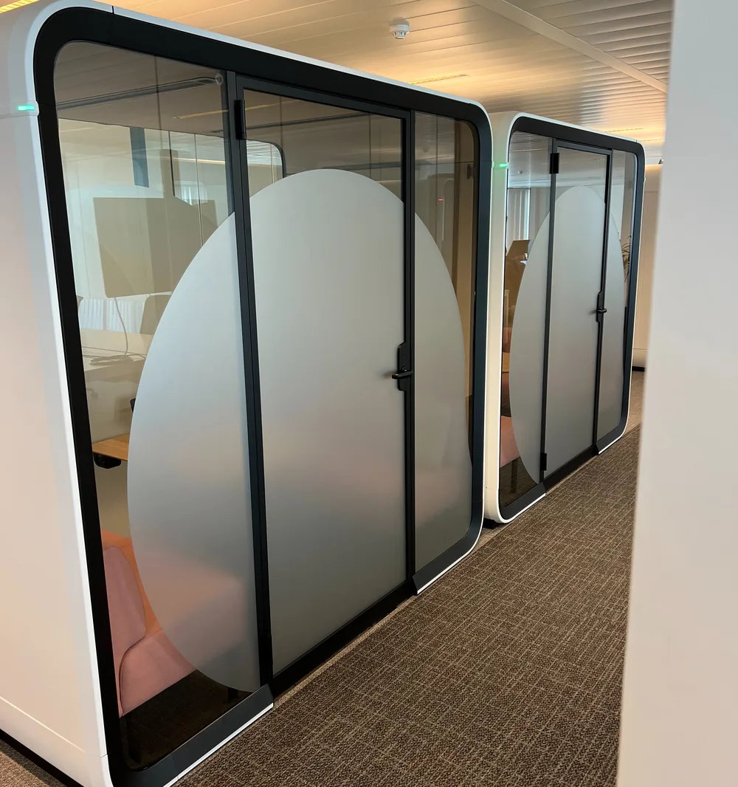

Audi Q8 e-tron
Extra tint achteraan, mat op de schermen
De achterste ruiten kregen extra tint, afgewerkt met DOTFIX. En de touchscreens binnenin een matte folie, tegen vettige vingers.

Protint9000Windowtinting en wraps Vraag je offerte
Autoruiten tinten, lichten smoken, PPF, wraps en zelfs je keuken. Al tien jaar plakken we folie alsof hij er altijd al zat, vanuit onze shop in Evergem.
Begonnen met autoruiten, ondertussen ook wraps, belettering en keukens. Wat het ook is: we plakken het strak en werken elke rand netjes af.

Zonwerende folie aan de binnenkant van je ruiten, voor meer privacy en minder warmte. Ook je koplampen en achterlichten kunnen we smoken.

Een volledige carwrap, chrome delete of PPF tegen steenslag. En voor je bedrijf: een bestelwagen of aanhangwagen die opvalt op de weg.

Je keuken in een nieuw jasje, zonder breekwerk of stof. Van zwart naar betonlook, of van wit naar een warme houtlook.
Zandstraalfolie, spiegelfolie en zonwerende folie voor kantoren, ramen en schuiframen. Bij Familiezorg plakten we er meer dan 70 meter van.
Vraag een offerteHoe lager het percentage, hoe minder licht er door je ruit komt. Twijfel je? Stuur ons een berichtje, dan denken we mee.

De eigenaar van deze Porsche had zijn ramen ooit op de klassieke manier laten tinten. Je zag de rand van de dotmatrix en oranje warmtelijnen. Wij haalden die folie eraf en plaatsten PPF-tint.
Op onze Instagram komt er geregeld nieuw werk bij, van een Audi tot een volledige keuken.
Volg @protint_9000De achterste ruiten kregen extra tint, afgewerkt met DOTFIX. En de touchscreens binnenin een matte folie, tegen vettige vingers.

Al heel wat EV9's getint met 15% DOTFIX.

15% getinte PPF op de achterruit, zonder oranje warmtelijnen.

Een zwarte keuken in witte betonlook, afgewerkt met gouden klinken.

Phone booths beplakt bij een softwarebedrijf in Sint-Denijs.
Professioneel, kwalitatief in verhouding met de prijs. Vrijdagavond de wagen daar gezet en sleutel in een kluisje gedeponeerd. De dag nadien zoals afgesproken de wagen opgehaald en het resultaat mag er zijn. Mooi gedaan, bedankt.
Na even te twijfelen tussen een nieuwe keuken of de bestaande te laten wrappen uiteindelijk gekozen voor het laatste. Heel blij met deze beslissing! Topservice, vriendelijk en vlot contact & vakkundig werk afgeleverd tot in de details.
Airco laten wrappen om deze te integreren in het interieur. Mathieu heeft dit met veel oog voor detail tot een goed einde gebracht. Zeer professioneel bedrijf, aan te raden!
Stuur een berichtje met je wagen of een foto van je keuken, en Mathieu en Jonas maken je offerte op. Liever even bellen kan natuurlijk ook.
Ik maakte deze demo voor jullie om te tonen wat er kan. Na een kort gesprek maak ik er iets veel persoonlijkers van, helemaal naar jullie wens.
Vrijblijvend. Ik kom langs of we bellen.
Op maat, op jullie eigen domein.
Geen voorschot. Jullie betalen pas als alles klaar is.
Hosting, domeinnaam en kleine wijzigingen, zoals nieuwe openingsuren.
Omdat een voorbeeld meer zegt dan een mail. Zo zien jullie meteen wat er kan, en het kost jullie niets.
Nee. Het gesprek is vrijblijvend. Vinden jullie het niks, dan is het daarmee gedaan.
Na ons gesprek staat jullie site binnen 10 tot 14 dagen online.
Zeker. Jullie domeinnaam kan gewoon blijven, de nieuwe site komt in de plaats van de oude.
Nee, dat doe ik op basis van ons gesprek. Eigen foto's zijn mooi meegenomen, maar niet nodig om te starten.